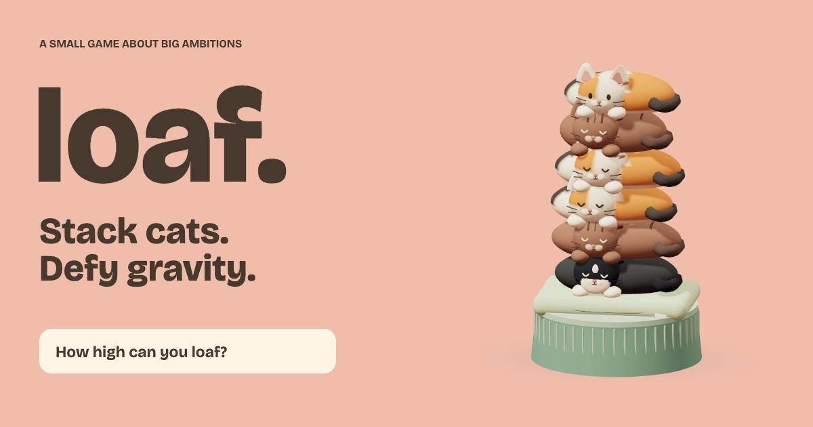

tools, games and experiments
I build small tools, games and systems with AI.
Playable ideas, useful utilities and honest notes about what worked.

Featured experiment
LOAF / stack cats, defy gravity
01 / the things I keep coming back to
Selected work
01Play now
LOAF
A one-button physics game about sleepy cats, questionable architecture and the next perfect drop.
02Utility
Localhost tab labels
A tiny browser helper that keeps the project name and port visible while an agent is working.
03Field notes
Date-only experiment
A documented test of whether a small constraint can make a noisy workflow easier to reason about.
02 / still useful, still a little odd
More experiments
Older tools and working notes remain available. They are small on purpose.
PR WarrantPin one public GitHub pull request to its exact commit range, then end the review with one closed material-defect verdict.↗
Print a scope receipt or launch a Conversation Lifeboat with One Small Fix. editable Markdown.One Small Fixconversation rescue↗
Reconnect Tax Receiptterminal log counter↗
Context Baggage Claiminstruction-file weight↗
Regex Customsunicode comparison↗
Receipts, Botsource-backed launch copy↗
Subscription Autopsyget its cost or work time per useful session.↗
Play Token Herd while your agent runs.60-second browser game↗